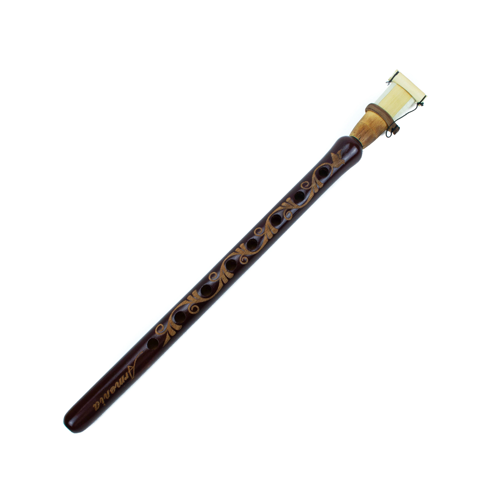

Дудук
Дудук - это духовой инструмент, пронизанный душой и традициями африканской музыки. Своим звучанием он переносит слушателей в мир глубокой рефлексии и красоты природы. Этот инструмент, изначально свойственный армянской культуре, нашел свое воплощение и в африканской музыкальной традиции, где стал символом гармонии и мистики.
Дудук обычно изготавливается из абрикосового дерева или других пород дерева с мягким звучанием. Инструмент имеет длинное деревянное тело с отверстием для дыхания и множеством маленьких отверстий для создания мелодии. Игрок использует специальный метод дыхания, придавая инструменту уникальное и проникновенное звучание.
Звучание дудука удивительно насыщенное и эмоциональное. Он способен передать широкий диапазон чувств, от грусти до восторга. Мелодии, исполняемые на дудуке, зачастую пропитаны мистической атмосферой, что делает этот инструмент особенно привлекательным для любителей глубокой и духовной музыки.
В африканской музыкальной культуре дудук используется не только для исполнения мелодий, но и для того, чтобы рассказать истории, передать настроение и соединить слушателей с духовными аспектами природы и жизни. Его звучание привносит в музыку африканского континента особую гармонию и глубину.
Дудук, ставший частью африканской музыкальной традиции, продолжает вдохновлять и завораживать своим уникальным звучанием, призывая к погружению в таинственный мир музыкальных историй и эмоций.